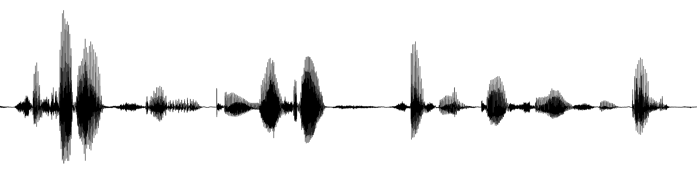
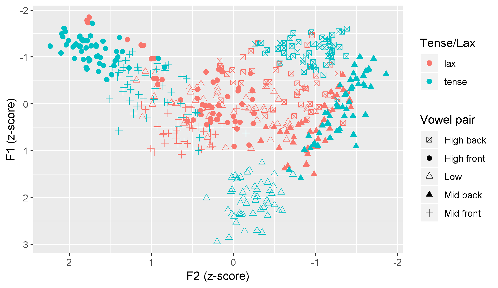

Research in phonetics, phonology and prosody
My doctoral research has focused on the phonetics and phonology of Chichicastenango K'iche', including topics such as vowel quality, stress, vowel deletion, glottalization and intonation. I have also participated in two collaborative projects: one on the perception of glottalization in disambiguating ambiguous phrase boundaries in English and Spanish, and another on the production of glottal fricatives in Yucatec Maya.
Vowels
Most dialects of K'iche' have a contrast between long vowels, as in chaaj 'ashes', and short vowels, as in chaj 'pine tree'. The Chichicastenango dialect is different: historically long vowels are produced as ''tense'' vowels and historically short vowels are produced as ''lax'' vowels, with a change in quality. Through a vowel production experiment I learned that the differnce between tense and lax vowels is that the lax vowels are each articulated in a more centralized position as compared to their tense pair. Additionally, the lax high front vowel shows signs of having merged with the tense high front vowel /i/ and /the lax central vowel /ə/.
Stress
Nearly all described varieties of K'iche' have stress that falls on the last syllable of the word, with few exceptions. In Chichicastenango K'iche' this is not the case; rather, verbs often have stress on an earlier syllable if it is heavy (has a tense vowel or a coda consonant).
Vowel deletion
Many vowels are deleted in Chichicastenango K'iche', resulting in complex consonant clusters. Vowels are typically deleted if they are lax, unstressed, and in non-final CV syllables.
Glottalization
It is commonly believed that all otherwise vowel-initial words begin with a glottal stop in Mayan languages. Through a study of full closures and acoustic cues to glottalized voice quality in a corpus of spontaneous speech I show that in Chichicastenango K'iche' not all vowel-initial words have an initial glottal stop. Rather, there is greater glottalization on words that have initial stress or are preceded by a vowel, a glottalized consonant or a pause. Vowels that occur in the initial position of the intoantional phrase are also more glottalized throughout, indicating an IP-initial phonetic marker that enhances the boundaries between phrases.
Status suffixes and intonational phrasing
Many different morphemes in K'iche' have 'phrase-final' and 'phrase-medial' forms; that is, what the word looks like depends on its position in the phrase. It is debated in the literature whether phrase-final forms occurs at the end of a syntactic constituent (the clause) or a prosodic constituent (the intonational phrase). Based on data from a corpus of spontaneous narratives I show that phrase-final forms do not quite line up with either clause boundaries nor IP boundary tones. I argue that the distrubution is prosodic and occurs in IP-final position, whereas the positions of boundary tones are restricted to the ends of the highest IP in a recursive structure.